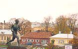

|
|
|
|
OL-historien inneholder noen skurker og mange tapere, spesielt hvis en tar utgangspunkt i den forslitte frasen "sølv er nederlag", som har blitt tillagt skøyteløperen Knut Johannessen, som tok gull på 10000 m i 1960 og på 5000 m i 1964. Oppmerksomheten er naturlig nok størst omkring de store heltene, men hvem er de største heltene? En ekte olympisk helt i Norge er selvfølgelig Trine Hattestad, som etter en lang karriere med nedturer og oppturer vant gull i sitt femte og siste OL. En annen type helt er Bob Beamon, som i 1968 som 22-åring leverte en prestasjon ingen trodde var mulig, da han hoppet 8.90 i lengde og tok sitt eneste OL-gull. De største heltene er nok de som har de fleste gullmedaljene. Men hvem er størst av amerikaneren Eric Heiden, som vant samtlige fem gullmedaljer i hurtigløp på skøyter i 1980, og briten Steven Redgrave, som vant én gullmedalje i roing hvert år fra 1984 til 2000, den siste med diabetes? Noen har bare sjansen til å erobre én medalje hver gang, andre har mange muligheter. Noen har f.eks. lagkonkurranser i tillegg til individuelle øvelser. Det er ikke tilfeldig at statistikkene over mestvinnende olympiere gjennom tidene preges av turnere, svømmere, friidrettsutøvere, langrennsløpere og padlere. Dessuten er det vel en viss forskjell på nivået i ulike idretter? Uansett viser den objektive statistikken basert på antall gullmedaljer dette:
|
Flest gullmedaljer i olympiske leker: |
|
Ray Ewry USA |
Han vant 10 gullmedaljer i øvelser som ikke lenger står på det olympiske programmet, lengde uten tilløp, høyde uten tilløp og tresteg uten tilløp. Den sistnevnte øvelsen stod bare på programmet to ganger i starten, mens han deltok i de to andre øvelsene i alt fire ganger. Enkel matematikk forteller at Ewry vant alle disse øvelsene de gangene han stilte opp, bl.a. i jubileumslekene i 1906, som ikke regnes som offisielle av alle. |
|
Larisa Latynina Sovjetunionen |
Hun vant sin niende olympiske gullmedalje i turn da hun vant frittstående i 1964. Med sine 18 olympiske medaljer til sammen fra debuten i 1956 er hun den mestvinnende gjennom tidene. |
|
Paavo Nurmi Finland |
 Han kom fra Åbo, var en mann av få ord og regnes vel i dag fortsatt som den aller største gjennom tidene i finsk idrett. Han vant ni gullmedaljer i 1920, 1924 og 1928. Til sammen ble det 12 olympiske medaljer på 5000 m, 10000 m, 3000 m hinder og i terrengløp, som da stod på OL-programmet. De hardeste konkurrentene hans var finner... |
|
Mark Spitz USA |
Han var den store forgrunnsfiguren i 1972 med sine syv gullmedaljer i svømming, og med sine to fra 1968 klarte han ni gullmedaljer i svømmekarrieren. Filmkarrieren som fulgte, ble derimot ingen stor suksess. Der klarte han ikke å kopiere mellomkrigstidas svømmehelt, Johnny Weissmuller, bedre kjent som Tarzan. |
|
Carl Lewis USA |
Han innledet sin olympiske karriere på hjemmebane i 1984 med å ta fire gull og dermed kopiere Jesse Owens. Etter tre nye OL endte han til slutt med ni gullmedaljer. De to som huskes best, er vel det gullet han fikk på 100 m i 1988 da kanadieren Ben Johnson ble diskvalifisert, og det overraskende gullet i lengde i 1996, som altså ble det niende, etter at han av "ekspertene" var avskrevet som idrettsmann. En enslig sølvmedalje kompletterer samlingen. |
|
Sawao Kato Japan |
Han var en av de mange japanerte som dominerte turnsporten på 1960- og 1970-tallet. Til sammen klarte han å erobre åtte gullmedljer i karrieren. Blant annet var han med på å vinne lagkonkurransen i både 1968, 1972 og 1976, og tok altså i tillegg fem individuelle gullmedaljer. Med noen medaljer av annen valør ble det i alt 12 medaljer. |
|
Bjørn Dæhlie Norge |
I løpet av tre OL vant han til sammen åtte gullmedaljer, tre i 1992, to i 1994 og tre i 1998. Han hadde fordelen av å kunne delta i tre OL på seks år mens han var på toppen av karrieren. Best huskes vel den dramatiske innspurten på 50km i Nagano, mens det bitreste nederlaget var stafetten på Lillehammer. Med fire medaljer i hvert OL blir det 12 OL-medaljer til sammen. Han er den største vinterolympieren gjennom tidene. |
|
DDR/Tyskland |
Som 18-åring vant hun sin første gullmedalje i kajakk i 1980, sin siste (?) som 42-åring i Aten. Til sammen ble (?) det åtte olympiske gullmedaljer i karrieren, til tross for at DDR boikottet OL i 1984. Da hun ble mester i 1980, var hun den yngste kajakkmester i historien. |
|
Jenny Thompson USA |
Hun har vunnet i alt åtte gullmedaljer i den olympiske karrieren sin fra 1992 til 2000, men det må da tilføyes at alle har kommet i lagsvømming. I tillegg har hun to individuelle medaljer av annen valør. |
|
Nikolai Andrianov Sovjetunionen |
Han har "ikke mer" enn syv gullmedaljer i turn til sammen, men det totale antallet på 15 medaljer fra 1972 til 1980 bringer ham opp på plassen bak Larisa Latynina blant de mestvinnende gjennom alle tider. |
|
Boris Shaklin Sovjetunionen |
Dette er enda en turner nær toppen av listene. Han vant også syv gullmedaljer, fra 1956 til 1964. Når det gjelder medaljer av alle slag, stoppet han på 13. |
|
Viktor Chukarin Sovjetunionen |
Han er egentlig ukrainer - og turner -, men konkurrerte selvfølgelig for Sovjetunionen i 1956 og 1960. Det endte med 13 medaljer til sammen, syv av disse var i gull. |
|
Vera Caslavska Tsjekkoslovakia |
Hun vant tre gullmedaljer i turn i 1964 og plusset på med ytterligere fire i 1968, da hun ble lekenes store turndronning. Hun markerte seg også ved å forære dem til de fire lederne for "Praha-våren". Til sammen ble det altså syv gullmedaljer i alt, i tillegg kom fire andre medaljer i perioden 60-68. Hun har siden blitt medlem av IOK. |
|
Gerevich Aladár Ungarn |
Han vant gull i lagkonkurransen i sabelfekting fra 1932 til 1960. Siste gang var han 50 år! I løpet av den tida mistet han to OL pga. krigen. Dessuten vant han individuelt i 1948. Til sammen ble det 10 medaljer av alle slag, syv av disse av "edleste valør". |
|
Matt Biondi USA |
Han vant syv gullmedaljer i sin karriere fra 1984 til 1992, fem av disse var i lagsvømming. Det totale antallet medaljer stoppet på 10. |
| |
| |
| |
| |
| |
| |
| |